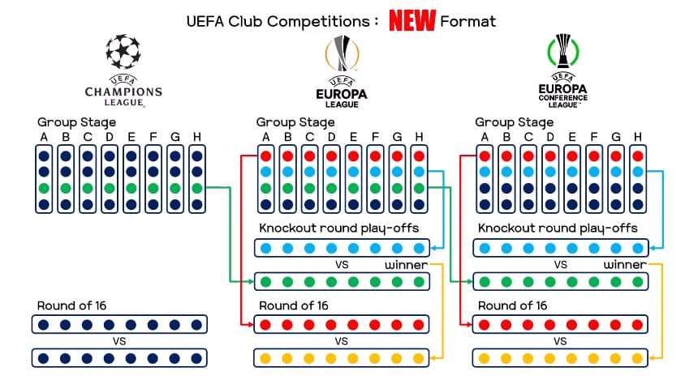

Novo Formato
Ao invés da tradicional fase de grupos, agora a Champions League contará com a “fase de liga”. Nesta fase, cada time enfrentará oito equipas diferentes (4 em casa e 4 fora), que serão definidos por um software no sorteio — obrigatoriamente cada clube enfrentará duas equipas de cada pote (1, 2, 3, 4)
Formato Antigo:

No formato tradicional, que perdurou por muitos anos, 32 equipes se dividiam em 8 grupos de 4 times. Cada equipe jogava contra os outros três times de seu grupo em jogos de ida e volta, totalizando seis partidas por clube na fase de grupos. Os dois melhores times de cada grupo avançavam para as oitavas de final, enquanto o terceiro colocado de cada grupo era transferido para a Liga Europa.
As oitavas de final e todas as fases seguintes eram disputadas em jogos de ida e volta, com o vencedor avançando até a grande final, que é decidida em uma única partida.